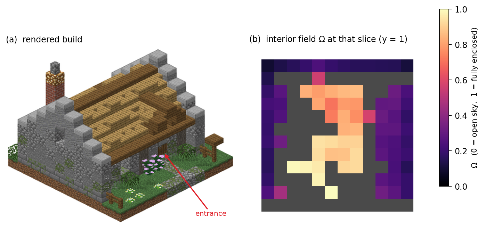
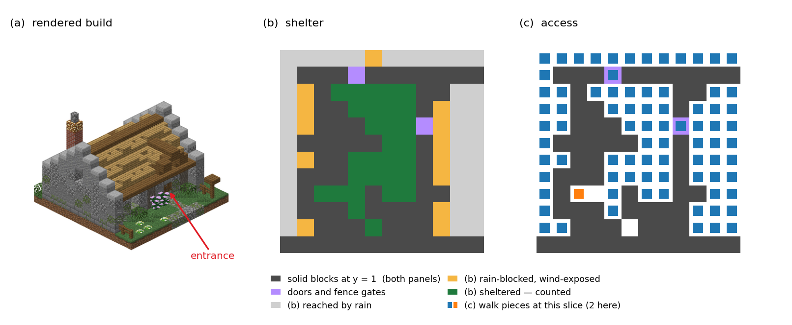

NeurIPS 2026 Workshop on Embodied Spatial Reasoning (ESR)

Evaluation of open-ended building generation in embodied environments (whether the builder is a procedural generator, a diffusion model or an LLM agent) still rests on human ratings, on visual models, or on similarity to a reference solution. The first two yield no falsifiable quality claim about a single building, and similarity requires a reference solution that open-ended building does not have. None of them answers the question: can an agent with a body use this structure as a house?
We propose the interior field Ω, defined by voxel geometry alone, which measures how enclosed each air cell is; it has no trainable parameters. On top of it we build two one-sided measures: shelter indicates whether a building can provide cover, and access indicates whether there exists an agent-centric path (one a player-sized body can walk) from relatively outdoor space to relatively indoor space. One-sided means the measure's house-quality claim is made in the low direction only and is falsifiable there: a low score means the building fails a necessary condition of a usable house (no cover, or no way in), a fact checkable in its geometry; a high score means only that the condition is met, not that the house is good. We also propose VoxHouse3D, a dataset of 2,007 player-built houses and 2,023 same-provenance non-house structures, taken from 28 archived worlds of real community servers, one map file each.
Can the building provide cover? Low means no roof or open sides.
Can a player-sized body walk from outdoor to indoor space? Low means no way in.

What each measure sees on the same build (VH3D-w07-700de289), on the layer y = 1. (b) Openings on both sides and at the top edge let wind in, so only the middle counts towards shelter. (c) Walkable components for access, one colour per component. Whole-build values: shelter 0.6194, access 0.7726.
On VoxHouse3D, both measures separate houses from same-provenance non-houses far better than building size does.
| Measure | AUC (house vs non-house) | 95% CI (cluster bootstrap) |
|---|---|---|
| Shelter | 0.8681 | [0.8421, 0.8805] |
| Access | 0.8424 | [0.8255, 0.8653] |
| Size-only baseline (solid fraction) | 0.6550 | [0.6081, 0.6895] |
| Size-only baseline (log block count) | 0.6275 | [0.5808, 0.6683] |
| Isovist openness | 0.7643 | [0.7199, 0.7947] |
We then apply the measures to current generators. Each number below is the share of a source's buildings that score lower than 90% of human houses do (shelter 0.3748, access 0.4526). “Either” counts a building that falls below on at least one of the two measures. For every generator, each rate is at least twice the human one. Confidence intervals are in the paper.
| Source | n | Shelter | Access | Either |
|---|---|---|---|---|
| Human house (reference) | 2,007 | 10.0% | 10.0% | 18.1% |
| Same-provenance non-house | 2,023 | 70.4% | 65.5% | 87.9% |
| Creative Agents (image-to-voxel reconstruction) | 1,000 | 90.5% | 66.9% | 94.4% |
| Build-with-Bombs (voxel diffusion) | 2,000 | 88.6% | 20.5% | 92.2% |
| MSG (autoregressive completion) | 300 | 86.0% | 47.3% | 92.3% |
| Direct LLM (pooled) | 178 | 27.0% | 53.4% | 73.6% |
@inproceedings{structgauge_2026,
title = {Shelter and Access: One-Sided, Falsifiable Interior Measures for Generated Voxel Buildings},
author = {Lin, Jen-Kai},
booktitle = {NeurIPS 2026 Workshop on Embodied Spatial Reasoning (ESR)},
year = {2026}
}